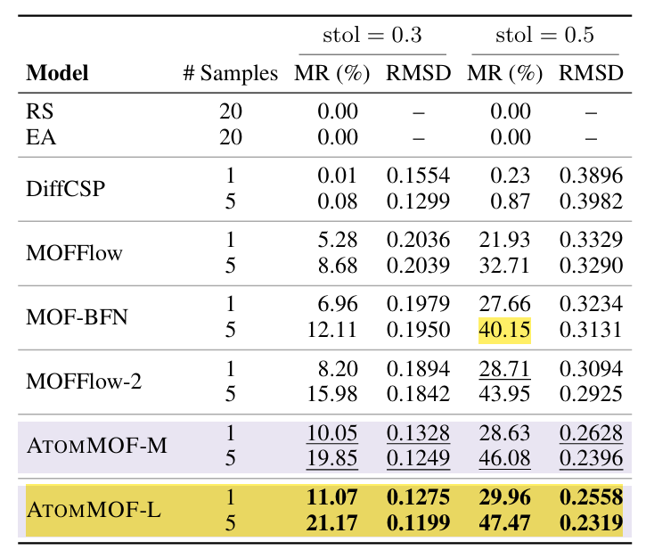
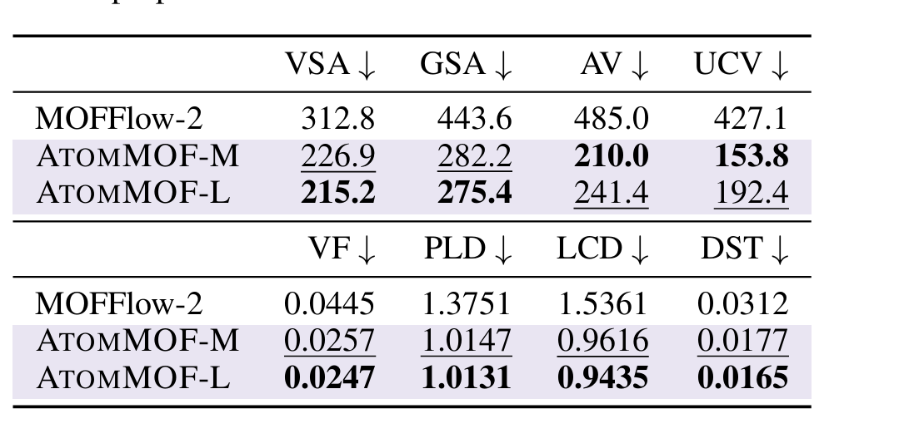
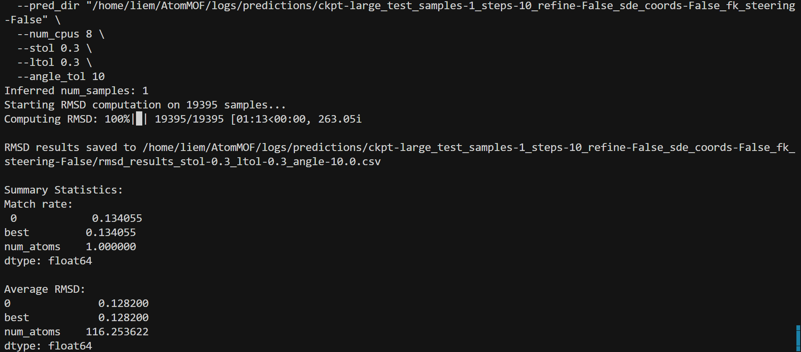
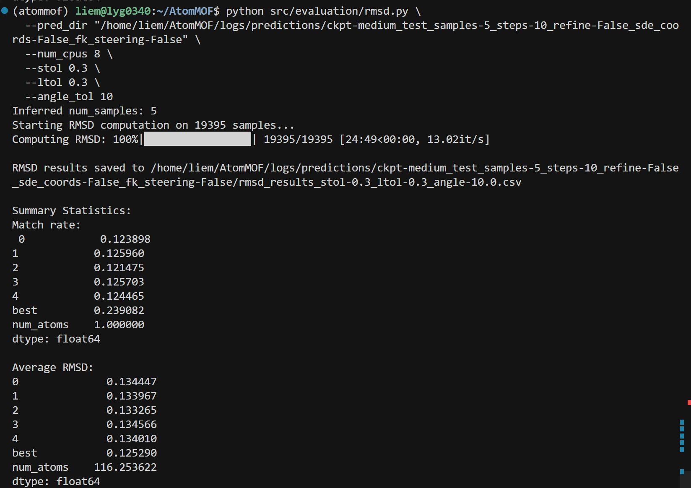
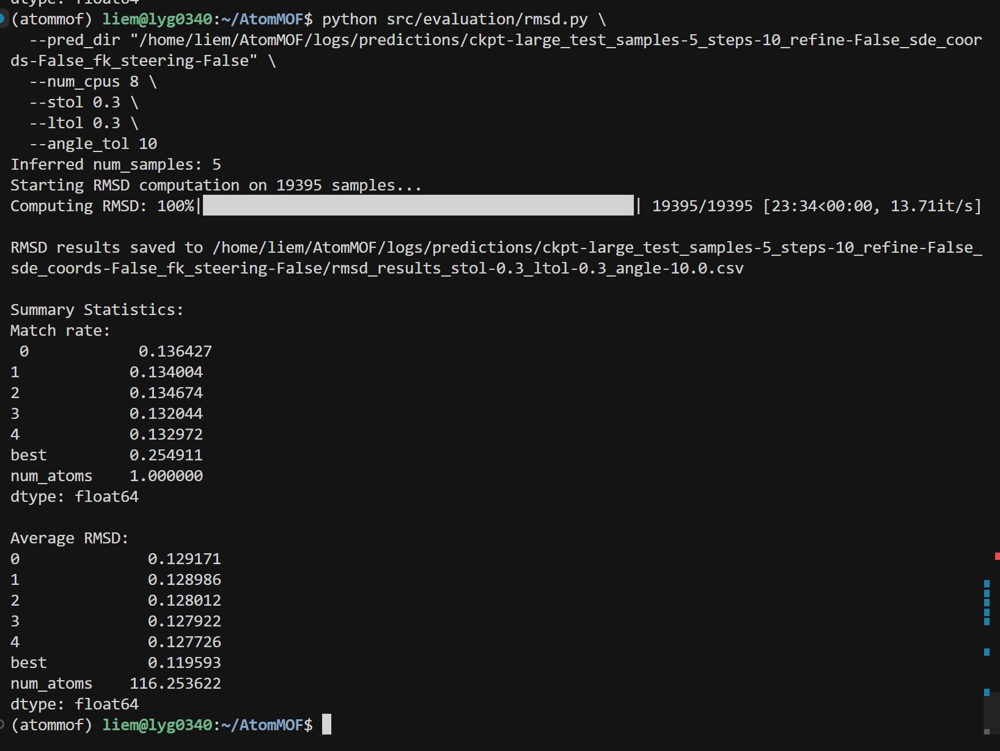
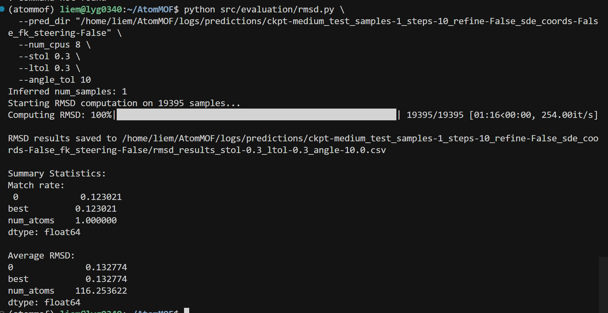
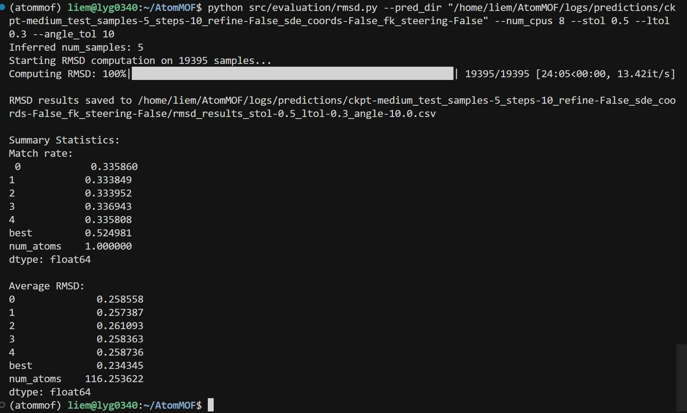
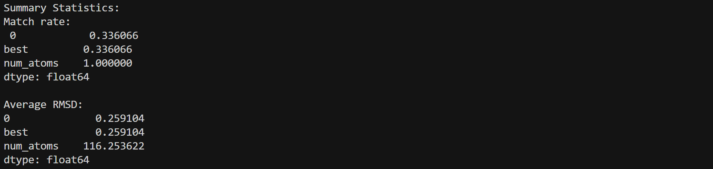
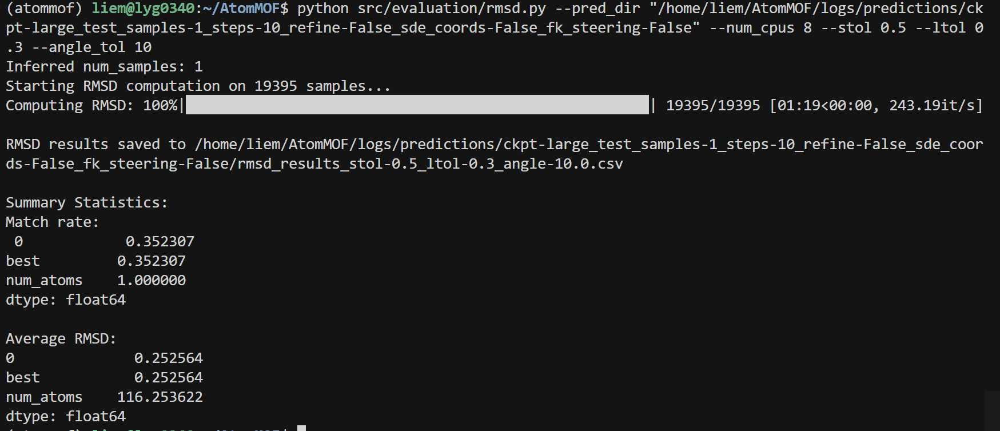
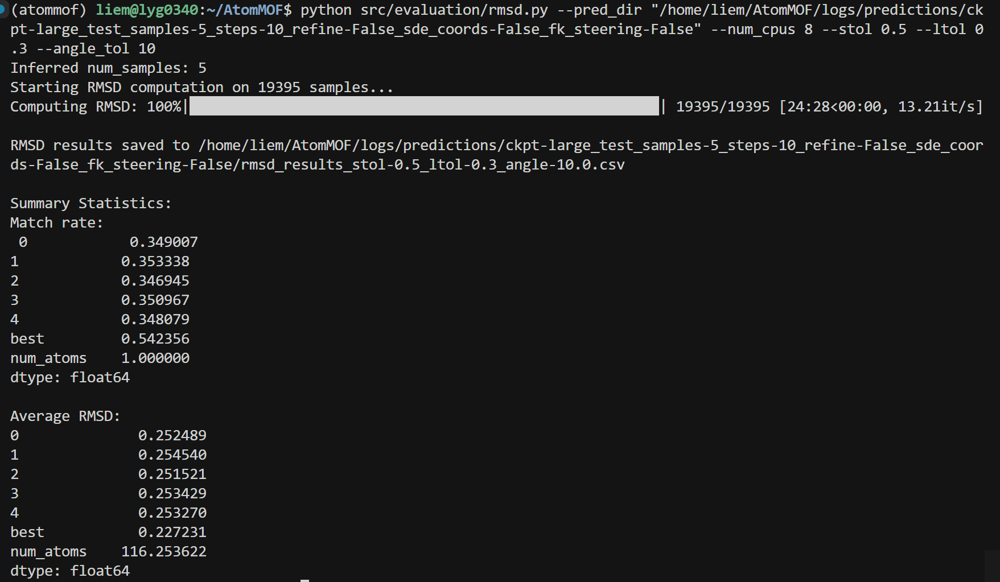

复现
复现任务总览¶
统一环境：cd /home/liem/AtomMOF && source atommof/bin/activate
统一 GPU：卡 1 和 3，即 CUDA_VISIBLE_DEVICES=1,3、trainer.devices=2
| 任务 ID | 内容 | 预测次数 | 评估 | 说明 |
|---|---|---|---|---|
| MR-RMSD | Match Rate & RMSD（论文主表） | 8 | rmsd.py (stol=0.3 / 0.5) | M & L × sample 1 & 5 × stol 0.3 & 0.5，OED=10 |
| PROP | Property Evaluation (Table 2) | 4 | property.py (Zeo++) | M & L × 无/有 steering，OED=50（property 用 50 步） |
| SCALE | Scaling (Figure 4) | 3 | collate → rmsd | S / M / L 无 steering，OED=10，stol=0.3 |
| TABLE4 | Table 4（FK steering 前后） | 2 | validity, structure_validity, mlip_energy | 无 steering + 有 steering（M），各 collate 后跑三项评估 |
| FK-PROP | Table 2 有 steering | 2 | property.py | M & L 有 steering 预测（可与 TABLE4 共用预测） |
| RUNTIME | Runtime scaling | 14 | 记时 | 1000 样本，OED=1,2,...,10,20,50,100，用 time 包或脚本记时 |
| ABLATION | Figure 6 超参敏感性 | 多组 | validity, structure_validity | 1000 样本，有 steering，改 num_particles / λ / resample / start_time / potential_mode |
取最新预测目录（predict 输出在 logs/predictions/<run_name>/）：
一、MR & RMSD（论文主表）¶
- dataset: BW dataset
- model: M & L
- sample: 1 或 5（每个系统采样数）
-
OED = 10（论文：10 integration steps）
-
stol=0.5, angle_tol=10
- stol=0.3, angle_tol=10
→ 8 次预测：M/L × sample=⅕ × 两种 stol 各跑一次 rmsd 评估（预测可复用：M sample1、M sample5、L sample1、L sample5 各 1 次预测，然后对同一 pred_dir 分别跑 --stol 0.3 和 --stol 0.5）。

二、Property Evaluation（Table 2）¶
- model: M & L
- 无 steering / 有 steering 各一组
- OED = 50（property 评估用 50 步）
→ 4 次预测：M 无 steering、M 有 steering、L 无 steering、L 有 steering。每次预测后 collate，再跑 property.py。

三、Scaling Law¶
3.1 Parameter scaling（Figure 4）¶
- model: S → M → L
- OED = 10
- stol = 0.3
- 无 steering
→ 3 次预测（S/M/L 各一次），每次 collate 后跑 rmsd（stol=0.3）。
3.2 Runtime scaling¶
- sample_number = 1000（
data.sample_limit_dict.predict=1000） - stol = 0.3
- OED = 1, 2, 3, 4, 5, 6, 7, 8, 9, 10, 20, 50, 100
→ 14 次预测（每种步数一次）。Runtime：在每条 predict 命令外包 time 或脚本内 import time 记录 wall time 即可（例如 time ( CUDA_VISIBLE_DEVICES=1,3 python src/predict.py ... )）。
四、Feynman-Kac Steering 相关¶
4.1 Table 2：Property evaluation（VSA, GSA, AV, UCV, VF, PLD, LCD, DST）¶
- 含义：用 Zeo++ 算 GT vs 生成结构的几何/孔道属性 RMSE。
- 复现思路：对 无 steering 和 有 steering 的预测各跑一遍 property 评估（脚本相同，只是
--pred_dir不同）。
| 实验 | 预测配置 | 评估脚本 |
|---|---|---|
| AtomMOF-M 无 steering | 下面「无 steering 预测」用 ckpt_path=logs/bwdb/medium.ckpt |
collate → property.py |
| AtomMOF-M 有 steering | 下面「有 steering 预测」用 medium.ckpt | 同上 |
| AtomMOF-L 无/有 steering | 同上，仅把 ckpt 改为 large.ckpt |
同上 |
- 论文还对比了 MOFFlow-2；若你没有其预测结果，可只复现 AtomMOF-M / AtomMOF-L 两行。
4.2 Table 4 + 正文：Steering 前后对比（formation energy、validity、structural validity）¶
- 含义：
- Formation energy error：从 0.127 → 0.020 eV/atom（约 84% 下降）。
- MOF validity (MOFChecker)：34.16% → 37.87%。
- Structural validity：81.70% → 91.70%。
- 复现思路：同一套 test 数据，跑两种预测 → 分别 collate → 分别跑三种评估。
| 实验 | 预测 | Collate | 评估 1：Formation energy | 评估 2：MOF validity | 评估 3：Structure validity |
|---|---|---|---|---|---|
| 无 steering（baseline） | 见下「无 steering 预测」 | collate_predictions.py |
mlip_energy.py |
validity.py（需 Zeo++） |
structure_validity.py |
| 有 steering | 见下「有 steering 预测」 | 同上 | 同上 | 同上 | 同上 |
- 论文用的是 200 步 + 16 particles 等（见下），为和正文/Table 4 对齐，建议先用这套默认超参。
4.3 Figure 4：Model scaling（Small / Medium / Large）¶
- 含义：看模型规模对结构质量的影响（无 steering 即可）。
- 复现思路：用同一
data.predict_split=test、同一max_num_atoms，分别用 small / medium / large 各跑一遍无 steering 预测，然后对每个pred_dir做： collate_predictions.pyrmsd.py（和/或 property、structure validity 等，按你关心的指标选）。
| 实验 | 预测 | 评估 |
|---|---|---|
| AtomMOF-S | ckpt_path=logs/bwdb/small.ckpt，无 steering |
collate → rmsd / property / structure_validity |
| AtomMOF-M | medium.ckpt，无 steering | 同上 |
| AtomMOF-L | large.ckpt，无 steering | 同上 |
4.4 Figure 6：Steering 超参敏感性（ablation）¶
- 含义：在约 1000 个随机 test 样本上，固定其它条件，单独改：particles、λ、resampling interval、start time、potential。
- 复现思路：
- 用
data.predict_split=test+ 限制样本数（若代码支持sample_limit或类似，设为 1000；否则需要从 test 中选 1000 个，或跑全量再在评估时子采样，取决于代码接口）。 - 对每个超参做一次「有 steering」预测（只改一个超参），然后对每个
pred_dir跑 validity + structure_validity（以及可选 formation energy）。
| 超参 | 论文默认 | Ablation 取值示例（其它固定为默认） |
|---|---|---|
| num_particles | 16 | 例如 4, 8, 16, 32 |
| fk_lambda (λ) | 2.0 | 例如 1.0, 2.0, 4.0 |
| fk_resampling_interval | 5 | 例如 1, 5, 10 |
| fk_start_time | 0.8 | 例如 0.5, 0.8, 0.9 |
| potential_mode | immediate | immediate, difference, max, sum（若代码支持） |
每个设置一个 pred_dir，便于和 Figure 6 的曲线/表格对照。
五、具体命令（GPU 卡 1 和 3）¶
以下均在项目根目录、已激活环境时执行：
cd /home/liem/AtomMOF && source atommof/bin/activate
5.1 无 steering 预测（MR-RMSD / SCALE / Table 4 baseline / Property 无 steering）¶
OED=10（论文主表）——用于 MR-RMSD、Scaling：
# Small（Figure 4）
CUDA_VISIBLE_DEVICES=1,3 python src/predict.py \
data=bwdb \
ckpt_path=logs/bwdb/small.ckpt \
trainer.devices=2 \
predict_args.num_samples=1 \
predict_args.sampling_steps=10 \
data.predict_split=test \
data.max_num_atoms=400
# Medium（同上，改 ckpt）
CUDA_VISIBLE_DEVICES=1,3 python src/predict.py \
data=bwdb \
ckpt_path=logs/bwdb/medium.ckpt \
trainer.devices=2 \
predict_args.num_samples=1 \
predict_args.sampling_steps=10 \
data.predict_split=test \
data.max_num_atoms=400
# Large（同上，改 ckpt）
CUDA_VISIBLE_DEVICES=1,3 python src/predict.py \
data=bwdb \
ckpt_path=logs/bwdb/large.ckpt \
trainer.devices=2 \
predict_args.num_samples=1 \
predict_args.sampling_steps=10 \
data.predict_split=test \
data.max_num_atoms=400
MR-RMSD 的 sample=5：把上面三条里的 predict_args.num_samples=1 改为 predict_args.num_samples=5，再各跑一次 M 和 L（共 2 次）。
Property / Table 4 无 steering（OED=50）：用 medium（或 large），步数改为 50：
CUDA_VISIBLE_DEVICES=1,3 python src/predict.py \
data=bwdb \
ckpt_path=logs/bwdb/medium.ckpt \
trainer.devices=2 \
predict_args.num_samples=1 \
predict_args.sampling_steps=50 \
data.predict_split=test \
data.max_num_atoms=400
预测输出在 logs/predictions/<run_name>/，取最新目录：
5.2 有 steering 预测（Table 4、Table 2 有 steering、Figure 6）¶
需先下载 MLIP：esen_sm_odac25_full.pt 放到 logs/（见 README）。
# Medium 有 steering（Table 4、Table 2）
CUDA_VISIBLE_DEVICES=1,3 python src/predict.py \
data=bwdb \
ckpt_path=logs/bwdb/medium.ckpt \
trainer.devices=2 \
predict_args.num_samples=1 \
predict_args.sampling_steps=200 \
data.predict_split=test \
data.max_num_atoms=400 \
predict_args.use_sde_coords=true \
predict_args.steering_args.fk_steering=true \
predict_args.steering_args.num_particles=16 \
predict_args.steering_args.fk_lambda=2.0 \
predict_args.steering_args.fk_resampling_interval=5 \
predict_args.steering_args.fk_start_time=0.80 \
predict_args.steering_args.potential_mode=immediate
# Large 有 steering（Table 2）：同上，仅改 ckpt_path=logs/bwdb/large.ckpt
# 显存不足可加：data.dynamic.max_num_atoms_square=200000
Figure 6 ablation（1000 样本）：加 data.sample_limit_dict.predict=1000，并依次改一个超参（num_particles=4/8/16/32、fk_lambda=1.0/2.0/4.0、fk_resampling_interval=⅕/10、fk_start_time=0.5/0.8/0.9、potential_mode=immediate 等）。
Runtime scaling（3.2）：1000 样本、无 steering，步数分别 1,2,...,10,20,50,100，每条命令前加 time 记录时间。
5.3 Collate（每个 pred_dir 跑一次）¶
# 将 PRED_DIR 设为上一步得到的路径，或直接写完整路径
PRED_DIR=/home/liem/AtomMOF/logs/predictions/test_samples-1_steps-10_refine-False_sde_coords-False_fk_steering-False
python src/evaluation/collate_predictions.py --pred_dir "/home/liem/AtomMOF/logs/predictions/ckpt-small_test_samples-1_steps-10_refine-False_sde_coords-False_fk_steering-False"
5.4 评估脚本¶
RMSD（MR-RMSD、Scaling）——论文主表用 stol=0.3，Section D 用 stol=0.5：
python src/evaluation/rmsd.py \
--pred_dir "/home/liem/AtomMOF/logs/predictions/ckpt-medium_test_samples-5_steps-10_refine-False_sde_coords-False_fk_steering-False" \
--num_cpus 8 \
--stol 0.3 \
--ltol 0.3 \
--angle_tol 10
# stol=0.5 时只改 --stol 0.5
python src/evaluation/rmsd.py --pred_dir "/home/liem/AtomMOF/logs/predictions/ckpt-large_test_samples-5_steps-10_refine-False_sde_coords-False_fk_steering-False" --num_cpus 8 --stol 0.5 --ltol 0.3 --angle_tol 10
Property（Table 2）——需 Zeo++：
export ZEO_PATH=/path/to/zeo++/network
python src/evaluation/property.py --pred_dir "$PRED_DIR" --num_cpus 8
Table 4 - Formation energy：
python -m src.evaluation.mlip_energy \
--pred_dir "$PRED_DIR" \
--mlip_model esen \
--mlip_ckpt_dir /home/liem/AtomMOF/logs
Table 4 - MOF validity (MOFChecker)：
export PATH="/path/to/zeo++:$PATH"
python -m src.evaluation.validity --pred_dir "$PRED_DIR" --num_cpus 8
Table 4 - Structural validity：
六、总览：要复现什么 → 用什么配置¶
| 目标 | 预测 | Collate | 评估 |
|---|---|---|---|
| MR-RMSD | M/L × sample 1 & 5，OED=10 | 每 pred_dir 一次 | rmsd.py（--stol 0.3 与 0.5） |
| Table 2 | M/L 无 steering + 有 steering，OED=50 | 每 pred_dir 一次 | property.py |
| Figure 4 | S / M / L 无 steering，OED=10 | 各一次 | rmsd.py --stol 0.3 |
| Table 4 | 无 steering + 有 steering（M） | 各一次 | mlip_energy, validity, structure_validity |
| Runtime scaling | 1000 样本，OED=1,2,...,10,20,50,100 | 各一次 | 用 time 记时 |
| Figure 6 | 1000 样本，有 steering，改超参 | 每配置一次 | validity, structure_validity |
Table1





mid sample = 1，stol = 0.5



| 模型 (Model) | 样本数 (# Samples) | stol 设定 | Match Rate (MR) | Average RMSD | 日志来源 |
|---|---|---|---|---|---|
| AtomMOF-M | 1 | 0.3 | 12.30% | 0.1328 | |
| AtomMOF-M | 5 | 0.3 | 23.91% | 0.1253 | |
| AtomMOF-M | 1 | 0.5 | 33.61% | 0.2591 | |
| AtomMOF-M | 5 | 0.5 | 52.50% | 0.2343 | |
| AtomMOF-L | 1 | 0.3 | 13.41% | 0.1282 | |
| AtomMOF-L | 5 | 0.3 | 25.49% | 0.1196 | |
| AtomMOF-L | 1 | 0.5 | 35.23% | 0.2526 | |
| AtomMOF-L | 5 | 0.5 | 54.24% | 0.2272 |
| 模型 | 样本数 | stol | 平均 RMSD (1-5 样本) | 最佳 RMSD (Best) | 数据来源 |
|---|---|---|---|---|---|
| AtomMOF-M | 1 | 0.3 | 0.1328 | 0.1328 | Page 2 |
| AtomMOF-M | 5 | 0.3 | 0.1341 (均值) | 0.1253 | Page 1 |
| AtomMOF-M | 1 | 0.5 | 0.2591 | 0.2591 | Page 3 |
| AtomMOF-M | 5 | 0.5 | 0.2588 (均值) | 0.2343 | Page 3 |
| AtomMOF-L | 1 | 0.3 | 0.1282 | 0.1282 | Page 1 |
| AtomMOF-L | 5 | 0.3 | 0.1284 (均值) | 0.1196 | Page 2 |
| AtomMOF-L | 1 | 0.5 | 0.2526 | 0.2526 | Page 3 |
| AtomMOF-L | 5 | 0.5 | 0.2530 (均值) | 0.2272 | Page 4 |